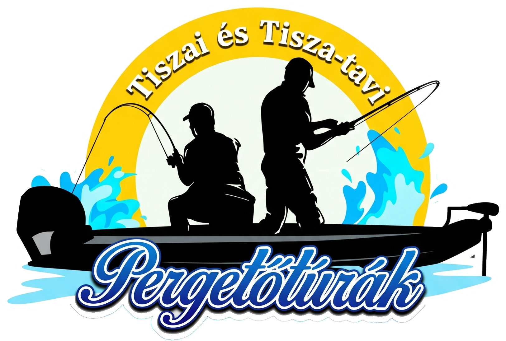
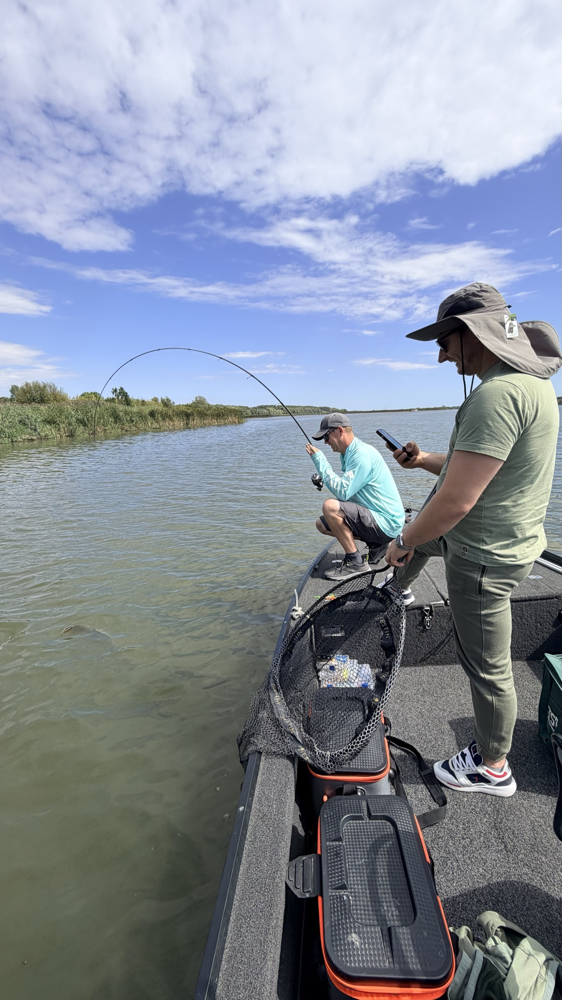
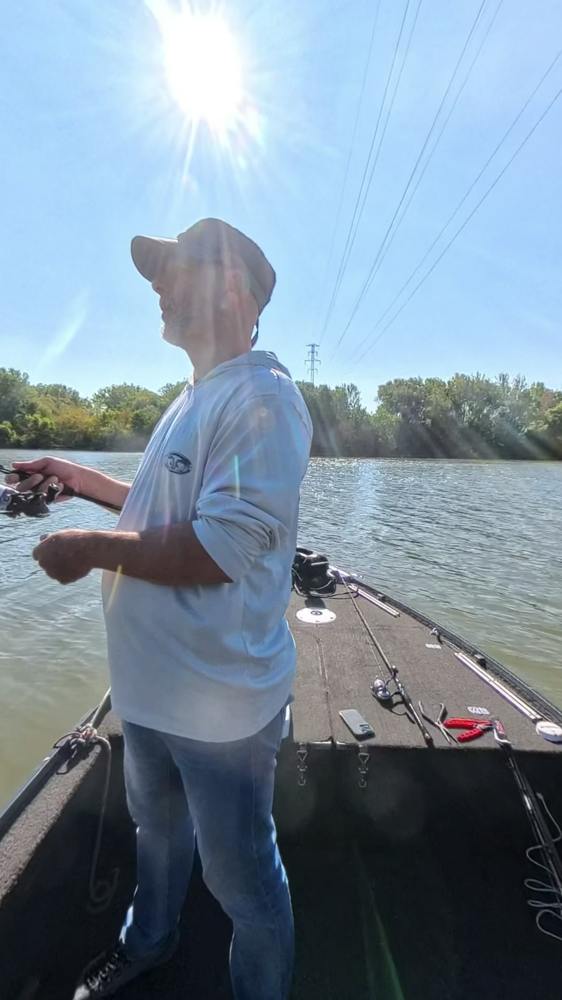
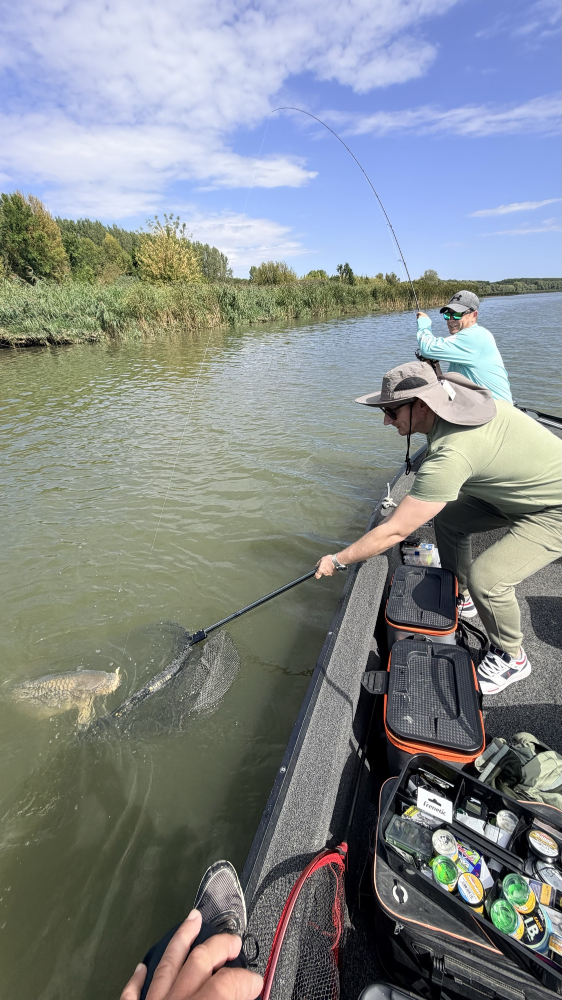
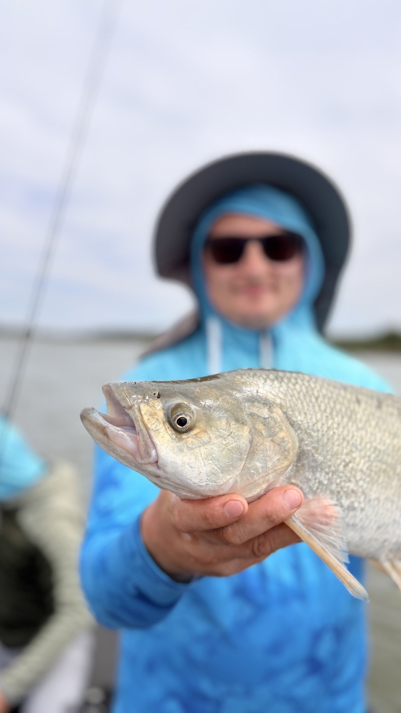
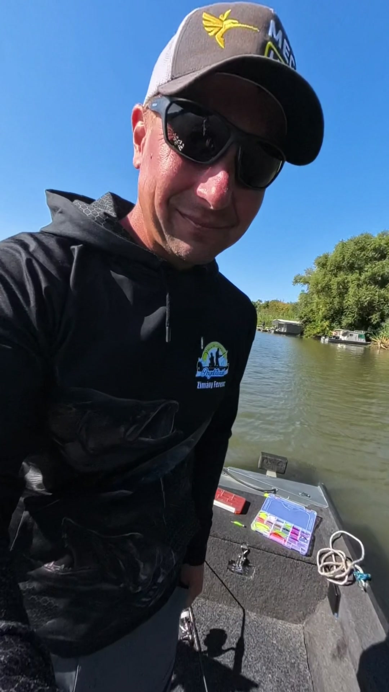

Tisza és Tisza-tó
Két különböző víz, egy vezetővel. Mindig oda megyünk, ahol aznap jobb a kapás esélye.

Hívj: +36 30 498 2467Gyere velünk a vízre: dobás, kapás, fárasztás, merítés – és a hal kíméletes visszaengedése.
Hívj, és egyeztetünk+36 30 498 2467Neked csak a jó kedvet kell hoznod. A többit együtt csináljuk végig.

1Telefonon egyeztetjük az időpontot, a pontos találkozási helyet pedig foglaláskor megadjuk. ⟨Kezdés időpontja, időtartam⟩

2Csónakkal megyünk oda, ahol aznap jó esély van a kapásra. Megmutatjuk a csalit és a technikát, aztán jöhet a dobás.

3Ha megvan a kapás, végig melletted vagyunk. Nyugodt fárasztás, aztán óvatos merítés.

4Gyors közös fotó, aztán a hal kíméletesen visszakerül a vízbe. Az élmény a tiéd marad.
Két különböző víz, egy vezetővel. Mindig oda megyünk, ahol aznap jobb a kapás esélye.
Felszerelt csónakkal megyünk a vízre. ⟨Mit biztosítasz: bot, orsó, csali, mentőmellény?⟩
A vezető ismeri a vizet és a szezont – és szívesen megmutatja neked is, mire figyelj.
Kíméletes fárasztás, gyors merítés, óvatos visszaengedés. Így marad hal a vízben jövőre is.
Koppints a videóra – hanggal indul.
← húzd oldalra a többi videóért →
Vendégeink a csónakban – fotó után a halak visszakerültek a vízbe. ⟨ellenőrizd, igaz-e minden képre⟩

⟨2–3 mondat magadról: mióta horgászol, mióta vezetsz túrákat, mit szeretsz a pergetésben.⟩
A célom, hogy jól érezd magad a vízen, tanulj valami újat – és a hal épségben menjen vissza.
Az árakat és a részleteket telefonon is szívesen elmondjuk.
⟨Ár: egyeztetés alapján⟩
⟨Ár: egyeztetés alapján⟩
⟨Ár: egyeztetés alapján⟩
A novemberi túrákra már lehet foglalni. Hívj, és megnézzük, melyik nap jó neked.
A leggyorsabb, ha felhívsz. Megbeszéljük az időpontot, a létszámot és minden részletet.
Hívj most+36 30 498 2467A pontos helyszínt foglaláskor egyeztetjük.